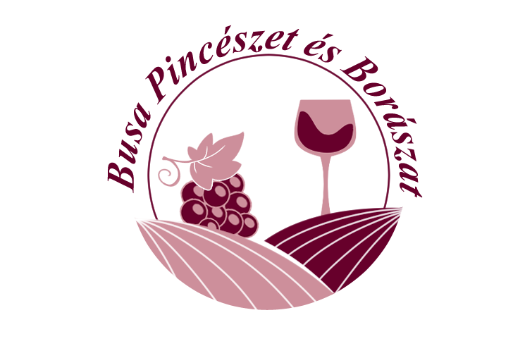
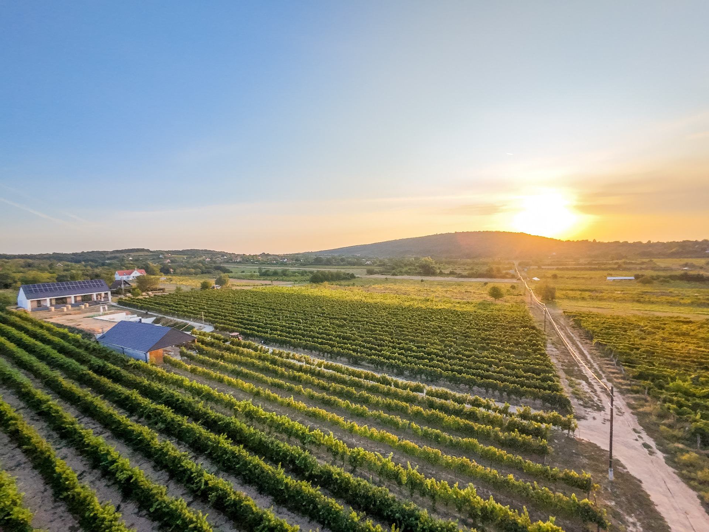

Busa Pincészet és BorászatTöbb generációs hagyomány, szenvedély és elkötelezettség a minőségi borok iránt. Ismerje meg borászatunkat, történetünket és azt, amiért a mi boraink különlegesek.

Borászatunkat 1995-ben alapította családunk, azzal a céllal, hogy a természet adta lehetőségeket a lehető legjobban kihasználva, prémium minőségű borokat készítsünk. Az elmúlt évtizedekben a hagyomány és a modern technológia ötvözésével építettük fel a mai borászatot, amely ma már a régió egyik meghatározó szereplője.
Számunkra a bor nem csupán egy ital, hanem egy történet – a szőlőről, a földről, az időről és az emberekről, akik hisznek benne.
BORAINK MEGTEKINTÉSESzőlőinket a lehető legtermészetesebb módon műveljük, tiszteletben tartva a környezetet.
Boraink a hagyományos eljárások és a modern technológia harmóniájában születnek.
Több borunk is elismerésben részesült hazai és nemzetközi versenyeken.
Számunkra a borászat nem csak munka, hanem életforma, amelyet generációról generációra adunk tovább.